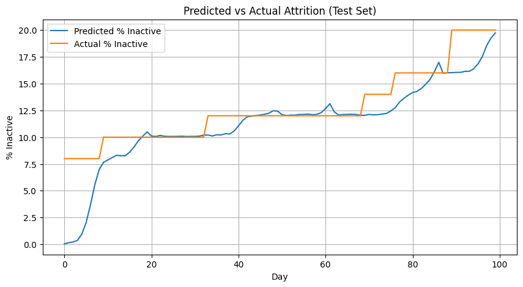
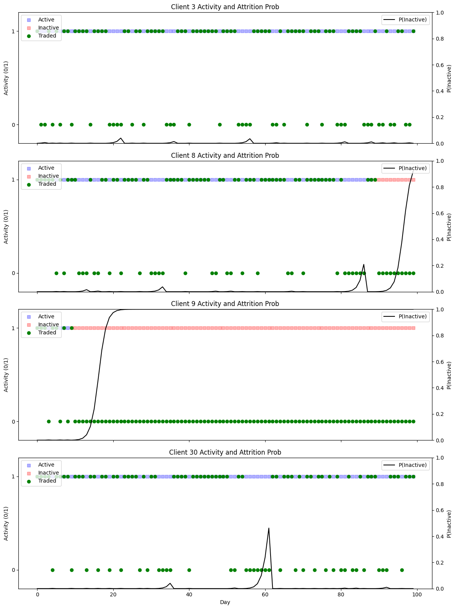
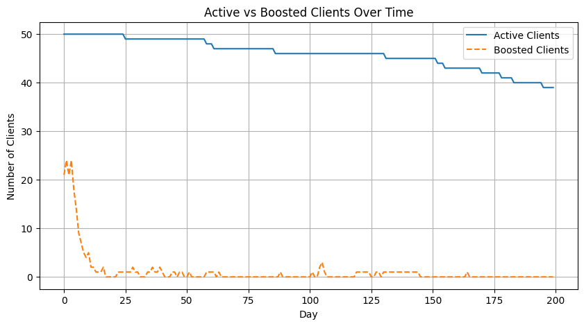
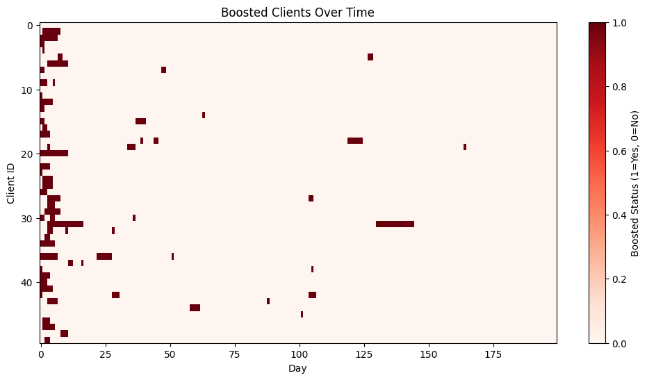
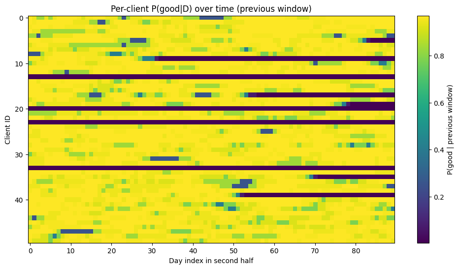
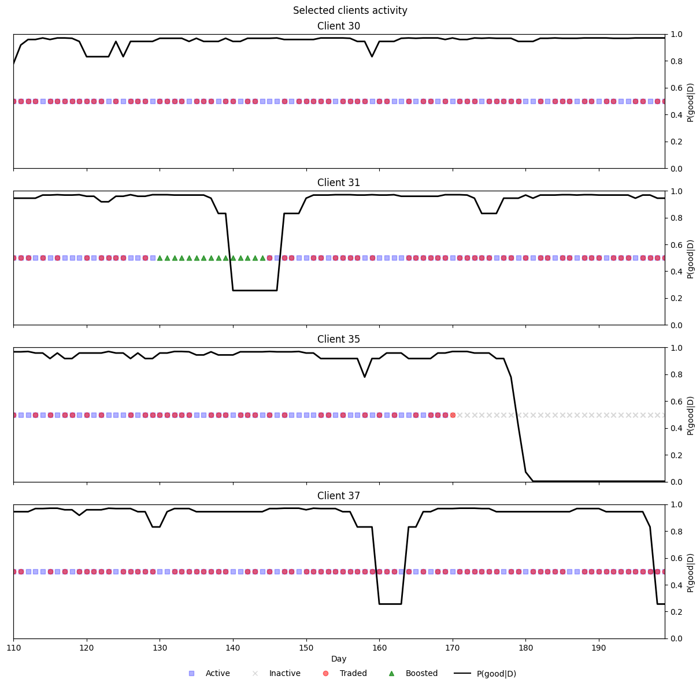

Modelling RfQs in Dealer to Client Markets#
Generative models for the request for quote activity#
Simulation of RfQs arrival and client attrition#
import numpy as np
import pandas as pd
import matplotlib.pyplot as plt
from scipy.stats import poisson, norm
from collections import deque
def run_simulation(N_clients=50,
T=200,
reservation_price_mean=100,
reservation_price_std_pct=0.1,
lambda_mean=1,
lambda_std=0.05,
prior_mean=60,
prior_std=10,
res_price_noise_std_pct=0.2,
hit_rate_target=0.4,
window_size=10,
attrition_threshold=0.1):
"""
Simulate RFQ interactions with Bayesian quantile pricing and client attrition.
Clients stop trading if their moving-average hit rate over `window_size` days falls below `attrition_threshold`.
Returns:
rfq_df: DataFrame of RfQ events
active_history: list of active client counts per day
activity_matrix: binary DataFrame of daily activity (clients x days)
"""
np.random.seed(42)
# Generate distribution of reservation prices for the segment of clients
reservation_prices = np.random.normal(reservation_price_mean,
reservation_price_mean * reservation_price_std_pct,
N_clients)
# Reservation prices are noisy given potential changing market conditions
res_price_noise_std = res_price_noise_std_pct * reservation_price_mean
res_price_noise_var = res_price_noise_std**2
# Generate distribution of RfQ intensities for the segment of clients
lambdas = np.abs(np.random.normal(lambda_mean, lambda_std, N_clients))
clients_posterior = {i: {'mean': prior_mean, 'var': prior_std**2,
'n': 0, 'sum_obs': 0.0}
for i in range(N_clients)}
z = norm.ppf(1 - hit_rate_target)
active = np.ones(N_clients, dtype=bool)
# Track per-client active status at end of each day
active_flags = np.zeros((T, N_clients), dtype=bool)
daily_history = [deque(maxlen=window_size) for _ in range(N_clients)]
active_history = []
records = []
Y = np.zeros((T, N_clients), dtype=int)
for t in range(T):
daily_hits = np.zeros(N_clients, dtype=int)
daily_reqs = np.zeros(N_clients, dtype=int)
for i in range(N_clients):
if not active[i]: continue
n_rfq = poisson.rvs(lambdas[i])
if n_rfq > 0: Y[t,i] = 1
for _ in range(n_rfq):
post = clients_posterior[i]
price = max(0.0, post['mean'] + np.sqrt(post['var'] + res_price_noise_var) * z)
r = norm.rvs(reservation_prices[i], res_price_noise_std)
# Trading happens when price offered is lower than the reservation price
hit = price <= r
daily_reqs[i] += 1; daily_hits[i] += int(hit)
# The dealer updates the estimation of the reservation price of the client
post['n'] += 1; post['sum_obs'] += r
post_var = 1/(1/prior_std**2 + post['n']/res_price_noise_var)
post['var'] = post_var
post['mean'] = post_var*(prior_mean/prior_std**2 + post['sum_obs']/res_price_noise_var)
records.append({'time': t, 'client_id': i, 'price': price, 'hit': hit})
for i in range(N_clients):
if not active[i] or daily_reqs[i]==0: continue
rate = daily_hits[i]/daily_reqs[i]
daily_history[i].append(rate)
# A client stops sending RfQs to the dealer if the hit & miss is too low
if len(daily_history[i])==window_size and np.mean(daily_history[i])<attrition_threshold:
active[i] = False
active_history.append(active.sum())
active_flags[t, :] = active.copy()
rfq_df = pd.DataFrame(records)
activity = pd.DataFrame(Y, columns=[f'client_{i}' for i in range(N_clients)])
active_df = pd.DataFrame(active_flags, columns=[f'client_{i}' for i in range(N_clients)])
return rfq_df, active_history, activity, active_df
from scipy.special import betaln
from scipy.optimize import minimize
# ----------------------
# Segment-level Model
# ----------------------
def estimate_segment_params(activity_matrix):
def log_marginal_likelihood(D, alpha, beta, gamma, delta):
n, x = len(D), D.sum()
last = np.where(D==1)[0]
r = n - (last[-1]+1) if last.size>0 else n
logA = (betaln(alpha+x, beta+n-x)-betaln(alpha,beta)
+betaln(gamma, delta+n)-betaln(gamma,delta))
logB = [(betaln(alpha+x, beta+n-x-i)-betaln(alpha,beta)
+betaln(gamma+1, delta+n-i)-betaln(gamma,delta))
for i in range(1, r+1)]
mags = [logA] + logB; m_max = max(mags)
return m_max + np.log(sum(np.exp(m - m_max) for m in mags))
def neg_ll(params):
alpha, beta, gamma, delta = np.exp(params)
return -sum(log_marginal_likelihood(activity_matrix.iloc[:end, j].values,
alpha, beta, gamma, delta)
for j in range(activity_matrix.shape[1])
for end in [activity_matrix.iloc[:,:].values.shape[0]])
res = minimize(neg_ll, np.log([1,1,1,1]), method='L-BFGS-B', bounds=[(-5,5)]*4)
return np.exp(res.x)
def attrition_probability(D, alpha, beta, gamma, delta):
n, x = len(D), D.sum()
last = np.where(D==1)[0]
r = n - (last[-1]+1) if last.size>0 else n
logA = (betaln(alpha+x, beta+n-x)-betaln(alpha,beta)
+betaln(gamma, delta+n)-betaln(gamma,delta))
logB = [(betaln(alpha+x, beta+n-x-i)-betaln(alpha,beta)
+betaln(gamma+1, delta+n-i)-betaln(gamma,delta))
for i in range(1, r+1)]
mags = [logA] + logB; m_max = max(mags)
logL = m_max + np.log(sum(np.exp(m - m_max) for m in mags))
P_active = np.exp(logA - logL)
return 1 - P_active
from sklearn.metrics import (
confusion_matrix, accuracy_score,
precision_score, recall_score,
roc_curve, auc
)
# ----------------------
# Workflow: Simulate, Train, Test
# ----------------------
T_train, T_test = 100, 100
T_tot = T_train + T_test
N_clients = 50
rfq_all, active_all, Y_all, active_df = run_simulation(N_clients = N_clients, T=T_train+T_test)
Y_train = Y_all.iloc[:T_train].reset_index(drop=True)
Y_test = Y_all.iloc[T_train:].reset_index(drop=True)
rfq_test = rfq_all[rfq_all['time']>=T_train].copy()
rfq_test['time'] -= T_train
active_test = active_all[T_train:]
alpha, beta, gamma, delta = estimate_segment_params(Y_train)
print(f"Params: α={alpha:.2f}, β={beta:.2f}, γ={gamma:.2f}, δ={delta:.2f}")
# ----------------------
# Risk Scoring
# ----------------------
risk_records = []
for j in range(Y_test.shape[1]):
hist = []
for t in range(T_test):
hist.append(Y_test.iloc[t, j])
D = np.array(hist, dtype=int)
p_inact = attrition_probability(D, alpha, beta, gamma, delta)
risk_records.append({
'time': t,
'client_id': j,
'p_inactive': p_inact,
'alert': p_inact > 0.5 # thresholded prediction
})
risk_df = pd.DataFrame(risk_records)
# Label inactivity
risk_df['inactive'] = risk_df.apply(
lambda r: not active_df.loc[r['time'] + T_train, f'client_{r["client_id"]}'],
axis=1
)
# ----------------------
# Evaluation Metrics
# ----------------------
# Ground truth and predictions
y_true = risk_df['inactive']
y_pred = risk_df['alert'] # at 0.5 threshold
y_scores = risk_df['p_inactive'] # raw probabilities
# Confusion matrix
tn, fp, fn, tp = confusion_matrix(y_true, y_pred).ravel()
print("Confusion Matrix:")
print(f" TN={tn}, FP={fp}, FN={fn}, TP={tp}")
# Accuracy, Precision, Recall at 0.5
accuracy = accuracy_score(y_true, y_pred)
precision = precision_score(y_true, y_pred)
recall = recall_score(y_true, y_pred)
print(f"Accuracy : {accuracy:.4f}")
print(f"Precision: {precision:.4f}")
print(f"Recall : {recall:.4f}")
# ROC curve & AUC
fpr, tpr, thresholds = roc_curve(y_true, y_scores)
roc_auc = auc(fpr, tpr)
print(f"AUC : {roc_auc:.4f}")
# Plot ROC
plt.figure(figsize=(8, 6))
plt.plot(fpr, tpr, label=f'ROC curve (AUC = {roc_auc:.2f})')
plt.plot([0, 1], [0, 1], 'k--', label='Random')
plt.xlabel('False Positive Rate')
plt.ylabel('True Positive Rate')
plt.title('ROC Curve')
plt.legend(loc='lower right')
plt.grid(True)
plt.tight_layout()
plt.show()
Params: α=148.41, β=85.31, γ=0.08, δ=148.41
Confusion Matrix:
TN=4365, FP=0, FN=76, TP=559
Accuracy : 0.9848
Precision: 1.0000
Recall : 0.8803
AUC : 0.9884
# ----------------------
# Plots: Hit Rate & Attrition Over Full Simulation
# ----------------------
# Active-client hit rate over time
hit_rate_active = []
days = np.arange(T_tot)
for t in days:
act_clients = active_df.iloc[t]
active_ids = [int(col.split('_')[1]) for col, flag in act_clients.items() if flag]
daily = rfq_all[rfq_all['time'] == t]
rates = []
for cid in active_ids:
cr = daily[daily['client_id'] == cid]
if not cr.empty:
rates.append(cr['hit'].mean())
hit_rate_active.append(np.mean(rates) if rates else np.nan)
plt.figure(figsize=(10,5))
plt.plot(days, hit_rate_active, label='Avg Hit Rate', color='blue')
plt.title('Average Hit Rate Over Time')
plt.xlabel('Day'); plt.ylabel('Hit Rate'); plt.grid(True); plt.legend()
# Attrition rate over time
attr_rate = [100 * (Y_all.shape[1] - x) / Y_all.shape[1] for x in active_all]
plt.figure(figsize=(10,5))
plt.plot(days, attr_rate, label='% Inactive', color='red')
plt.title('Cumulative Attrition Rate Over Time')
plt.xlabel('Day'); plt.ylabel('% Inactive'); plt.grid(True); plt.legend()
<matplotlib.legend.Legend at 0x31037edf0>
# ----------------------
# Model Fit Visualization
# ----------------------
# Compare predicted attrition vs actual on test
pred_rate = risk_df.groupby('time')['p_inactive'].mean()
actual_rate = [100*(N_clients-x)/N_clients for x in active_test]
plt.figure(figsize=(10,5))
plt.plot(pred_rate.index, 100*pred_rate.values, label='Predicted % Inactive')
plt.plot(actual_rate, label='Actual % Inactive')
plt.title('Predicted vs Actual Attrition (Test Set)')
plt.xlabel('Day'); plt.ylabel('% Inactive'); plt.legend(); plt.grid(True)

import numpy as np
import matplotlib.pyplot as plt
# ----------------------
# Function: Plot Clients by ID (single figure with subplots)
# ----------------------
def plot_clients_subplots(client_ids):
"""
For each client in client_ids, create a subplot in one figure:
- Left y-axis: active (blue=active, red=inactive) and trading days (green), with numeric ticks (0/1)
- Right y-axis: attrition probability over time
- Separate legends: left for 'Active', 'Inactive', 'Traded'; right for 'P(Inactive)'
- Title of each subplot shows the client ID
"""
n = len(client_ids)
fig, axes = plt.subplots(nrows=n, ncols=1, figsize=(12, 4*n), sharex=True)
if n == 1:
axes = [axes]
days = np.arange(T_test)
for ax1, cid in zip(axes, client_ids):
# gather P(inactive) values
p_vals = [
risk_df.loc[
(risk_df['client_id'] == cid) & (risk_df['time'] == t),
'p_inactive'
].item()
for t in days
]
# latent active flags and trading days
active_flag = active_df[T_train:][f'client_{cid}'].values
trade_days = Y_test.iloc[:, cid]
# Left axis: Active vs Inactive
idx_active = days[active_flag]
idx_inactive = days[~active_flag]
h_active = ax1.scatter(idx_active, [1]*len(idx_active), c='blue', marker='s', alpha=0.3, label='Active')
h_inactive = ax1.scatter(idx_inactive, [1]*len(idx_inactive), c='red', marker='s', alpha=0.3, label='Inactive')
# Left axis: actual trades (0 or 1)
h_trade = ax1.scatter(trade_days.index, trade_days.values,
c='green', marker='o', label='Traded')
# Set numeric ticks on left y-axis
ax1.set_ylim(-0.2, 1.2)
ax1.set_yticks([0, 1])
ax1.set_ylabel('Activity (0/1)')
ax1.set_title(f'Client {cid} Activity and Attrition Prob')
# Left-axis legend
ax1.legend(handles=[h_active, h_inactive, h_trade],
labels=['Active', 'Inactive', 'Traded'],
loc='upper left')
# Right axis: P(Inactive)
ax2 = ax1.twinx()
h_prob, = ax2.plot(days, p_vals, c='black', label='P(Inactive)')
ax2.set_ylim(0, 1)
ax2.set_ylabel('P(Inactive)')
# Right-axis legend
ax2.legend(handles=[h_prob], loc='upper right')
axes[-1].set_xlabel('Day')
plt.tight_layout()
plt.show()
# Example: plot select clients in one figure
#plot_clients_subplots([3, 8, 9, 18])
plot_clients_subplots([3, 8, 9, 30])

Simulation of client abnormal behavior#
import numpy as np
import pandas as pd
import matplotlib.pyplot as plt
from scipy.stats import poisson, norm
from collections import deque
def run_simulation(N_clients=50,
T=200,
reservation_price_mean=100,
reservation_price_std_pct=0.1,
lambda_mean=1,
lambda_std=0.05,
prior_mean=60,
prior_std=10,
reservation_price_noise_std=None,
discount_trigger_pct=0.35, # trigger threshold: 0.5 means 50% lower
boosted_rate_factor = 10,
hit_rate_target=0.4,
window_size=10,
attrition_threshold=0.1,
random_seed=42):
"""
Simulate RFQ interactions with Bayesian quantile pricing and client attrition.
Adds a mechanism: if a client gets a quote at least `discount_trigger_pct` below their reservation price,
they double their RFQ rate until the dealer quotes above their reservation price.
"""
np.random.seed(random_seed)
# Generate distribution of reservation prices
reservation_prices = np.random.normal(reservation_price_mean,
reservation_price_mean * reservation_price_std_pct,
N_clients)
# Noise in reservation prices
fair_price = reservation_price_mean
res_price_noise_std = reservation_price_noise_std or (fair_price * reservation_price_std_pct * 2)
res_price_noise_var = res_price_noise_std ** 2
# Base RfQ intensities
lambdas = np.abs(np.random.normal(lambda_mean, lambda_std, N_clients))
base_lambdas = lambdas.copy() # store for reset later
# Posterior beliefs
clients_posterior = {i: {'mean': prior_mean, 'var': prior_std ** 2,
'n': 0, 'sum_obs': 0.0}
for i in range(N_clients)}
z = norm.ppf(1 - hit_rate_target)
active = np.ones(N_clients, dtype=bool)
# Flags for tracking "boosted" mode
boosted = np.zeros(N_clients, dtype=bool)
# Track daily active/boosted status
active_flags = np.zeros((T, N_clients), dtype=bool)
boosted_flags = np.zeros((T, N_clients), dtype=bool)
daily_history = [deque(maxlen=window_size) for _ in range(N_clients)]
active_history = []
records = []
Y = np.zeros((T, N_clients), dtype=int) # binary: whether client sent at least one RFQ that day
for t in range(T):
daily_hits = np.zeros(N_clients, dtype=int)
daily_reqs = np.zeros(N_clients, dtype=int)
for i in range(N_clients):
if not active[i]:
continue
n_rfq = poisson.rvs(lambdas[i])
if n_rfq > 0:
Y[t, i] = 1
for _ in range(n_rfq):
post = clients_posterior[i]
price = max(0.0, post['mean'] + np.sqrt(post['var'] + res_price_noise_var) * z)
r = norm.rvs(reservation_prices[i], res_price_noise_std)
# Trading happens when price <= reservation price
hit = price <= r
daily_reqs[i] += 1
daily_hits[i] += int(hit)
# Check discount trigger
if price <= (1 - discount_trigger_pct) * r:
boosted[i] = True
lambdas[i] = base_lambdas[i] * boosted_rate_factor
elif boosted[i] and price > r / (1-discount_trigger_pct):
boosted[i] = False
lambdas[i] = base_lambdas[i]
# Update posterior belief
post['n'] += 1
post['sum_obs'] += r
post_var = 1 / (1 / (prior_std ** 2) + post['n'] / res_price_noise_var)
post['var'] = post_var
post['mean'] = post_var * (prior_mean / (prior_std ** 2) +
post['sum_obs'] / res_price_noise_var)
records.append({'time': t,
'client_id': i,
'price': price,
'reservation': r,
'hit': hit,
'boosted': boosted[i]})
# Update attrition status
for i in range(N_clients):
if not active[i] or daily_reqs[i] == 0:
continue
rate = daily_hits[i] / daily_reqs[i]
daily_history[i].append(rate)
if len(daily_history[i]) == window_size and np.mean(daily_history[i]) < attrition_threshold:
active[i] = False
active_history.append(int(active.sum()))
active_flags[t, :] = active.copy()
boosted_flags[t, :] = boosted.copy()
rfq_df = pd.DataFrame(records)
activity_df = pd.DataFrame(Y, columns=[f'client_{i}' for i in range(N_clients)])
active_df = pd.DataFrame(active_flags, columns=[f'client_{i}' for i in range(N_clients)])
boosted_df = pd.DataFrame(boosted_flags, columns=[f'client_{i}' for i in range(N_clients)])
return rfq_df, active_history, activity_df, active_df, boosted_df
# Run simulation
rfq_df, active_history, activity_df, active_df, boosted_df = run_simulation()
# Plot active and boosted clients over time
plt.figure(figsize=(10,5))
plt.plot(active_df.sum(axis=1), label='Active Clients')
plt.plot(boosted_df.sum(axis=1), label='Boosted Clients', linestyle='--')
plt.xlabel('Day')
plt.ylabel('Number of Clients')
plt.title('Active vs Boosted Clients Over Time')
plt.legend()
plt.grid(True)
plt.show()
# Heatmap of boosted status
plt.figure(figsize=(12,6))
plt.imshow(boosted_df.T, aspect='auto', cmap='Reds')
plt.colorbar(label='Boosted Status (1=Yes, 0=No)')
plt.xlabel('Day')
plt.ylabel('Client ID')
plt.title('Boosted Clients Over Time')
plt.show()


from scipy.special import betaln, gammaln
from scipy.optimize import minimize
# -----------------------------
# Beta-Binomial mixture MLE with shared mean
# -----------------------------
def log_beta_binom_pmf(x, n, alpha, beta):
# log [ C(n,x) * B(alpha+x, beta+n-x) / B(alpha,beta) ]
return (
gammaln(n + 1) - gammaln(x + 1) - gammaln(n - x + 1)
+ betaln(alpha + x, beta + n - x)
- betaln(alpha, beta)
)
def neg_log_likelihood(params, xs, ns):
# params = [logit_mu, log_k_g, log_k_b, logit_qg]
logit_mu, log_k_g, log_k_b, logit_qg = params
mu = 1 / (1 + np.exp(-logit_mu)) # shared mean
k_g = np.exp(log_k_g) + 1e-8
k_b = np.exp(log_k_b) + 1e-8
qg = 1 / (1 + np.exp(-logit_qg))
# convert to alpha, beta
alpha_g, beta_g = mu * k_g, (1 - mu) * k_g
alpha_b, beta_b = mu * k_b, (1 - mu) * k_b
# mixture likelihood per client
ll = []
for x, n in zip(xs, ns):
log_p_g = log_beta_binom_pmf(x, n, alpha_g, beta_g)
log_p_b = log_beta_binom_pmf(x, n, alpha_b, beta_b)
# log-sum-exp for mixture
a = np.log(qg) + log_p_g
b = np.log(1 - qg) + log_p_b
m = max(a, b)
ll_i = m + np.log(np.exp(a - m) + np.exp(b - m))
ll.append(ll_i)
return -np.sum(ll)
def fit_beta_mixture_mle(activity_df, train_days):
"""
activity_df: (T x N) binary DataFrame
train_days: number of days used for training (first half)
Returns dict with fitted parameters.
"""
T, N = activity_df.shape
A = activity_df.iloc[:train_days].values # (train_days x N)
xs = A.sum(axis=0) # successes per client in training
ns = np.full_like(xs, fill_value=train_days)
# rough start for mean
p_hat = xs.mean() / train_days
logit_mu0 = np.log(p_hat / (1 - p_hat + 1e-8))
start = np.array([
logit_mu0,
np.log(10.0), # k_g initial concentration
np.log(2.0), # k_b initial concentration
0.0 # logit(0.5)
], dtype=float)
res = minimize(neg_log_likelihood, start, args=(xs, ns), method='L-BFGS-B')
logit_mu, log_k_g, log_k_b, logit_qg = res.x
mu = 1 / (1 + np.exp(-logit_mu))
k_g = np.exp(log_k_g) + 1e-8
k_b = np.exp(log_k_b) + 1e-8
params = {
'mu': float(mu),
'alpha_g': float(mu * k_g), 'beta_g': float((1 - mu) * k_g),
'alpha_b': float(mu * k_b), 'beta_b': float((1 - mu) * k_b),
'q_g': float(1 / (1 + np.exp(-logit_qg))),
'success': bool(res.success),
'message': res.message
}
return params
def posterior_good(x, n, params):
a_g = params['alpha_g']; b_g = params['beta_g']
a_b = params['alpha_b']; b_b = params['beta_b']
q_g = params['q_g']
log_p_g = log_beta_binom_pmf(x, n, a_g, b_g)
log_p_b = log_beta_binom_pmf(x, n, a_b, b_b)
a = np.log(q_g) + log_p_g
b = np.log(1 - q_g) + log_p_b
m = max(a, b)
num = np.exp(a - m)
den = num + np.exp(b - m)
return float(num / den)
# Fit on first half, removing first 25 days until it settles
T = activity_df.shape[0]
mid = T // 2
params = fit_beta_mixture_mle(activity_df[25:], train_days=mid)
# Detect abnormalities on second half using a sliding window
n_window = 10 # window size for detection, can be adjusted
threshold = 0.5 # classify as abnormal if p(good|D) < threshold
N = activity_df.shape[1]
abnormal_flags = np.zeros_like(activity_df.values, dtype=bool)
# For each day t in the second half, use the last n_window days (bounded within the second half)
for t in range(mid, T):
start = max(mid, t - n_window + 1)
end = t + 1
window = activity_df.iloc[start:end].values # (w x N)
n = window.shape[0]
x = window.sum(axis=0)
# Posterior for each client
p_good = np.array([posterior_good(int(xi), int(n), params) for xi in x])
abnormal_flags[t, :] = p_good < threshold
abnormal_df = pd.DataFrame(abnormal_flags, columns=activity_df.columns, index=activity_df.index)
params
{'mu': 0.6459024041525655,
'alpha_g': 17819.14219878137,
'beta_g': 9768.837168102045,
'alpha_b': 0.6772910514791353,
'beta_b': 0.3713055277018204,
'q_g': 0.892871535754001,
'success': True,
'message': 'CONVERGENCE: REL_REDUCTION_OF_F_<=_FACTR*EPSMCH'}
import numpy as np
import matplotlib.pyplot as plt
from scipy.stats import beta
def plot_fitted_betas(params, bins=200):
"""
Plot fitted good vs bad Beta distributions.
params: dict returned by fit_beta_mixture_mle
"""
a_g, b_g = params['alpha_g'], params['beta_g']
a_b, b_b = params['alpha_b'], params['beta_b']
q_g = params['q_g']
# Grid
x = np.linspace(0, 1, bins)
# Densities
pdf_g = beta.pdf(x, a_g, b_g)
pdf_b = beta.pdf(x, a_b, b_b)
plt.figure(figsize=(10, 6))
plt.plot(x, pdf_g, label=f"Good (α={a_g:.2f}, β={b_g:.2f})", lw=2, color="blue")
plt.plot(x, pdf_b, label=f"Bad (α={a_b:.2f}, β={b_b:.2f})", lw=2, color="red")
plt.fill_between(x, pdf_g, alpha=0.2, color="blue")
plt.fill_between(x, pdf_b, alpha=0.2, color="red")
plt.title("Fitted Beta Distributions (Good vs Bad)")
plt.xlabel("Success probability")
plt.ylabel("Density")
plt.legend()
plt.grid(True, ls="--", alpha=0.5)
plt.show()
plot_fitted_betas(params)

# Use a previous window (exclude day t) when computing P(good|D)
n_window = 10
threshold = 0.5
def build_pgood_panel(activity_df, boosted_df, active_df, params, mid, n_window, threshold):
T, N = activity_df.shape
rows = []
# Start at mid + n_window to ensure a full *previous* window exists
for t in range(mid + n_window, T):
start = t - n_window
end = t # exclude day t
window = activity_df.iloc[start:end] # (n_window x N)
x = window.sum(axis=0).values.astype(int) # successes per client in previous window
n = n_window
# compute p_good for each client
p_goods = []
for j in range(N):
p = posterior_good(int(x[j]), int(n), params)
p_goods.append(p)
p_goods = np.array(p_goods)
# flags at time t
boosted_t = boosted_df.iloc[t].values.astype(bool)
active_t = active_df.iloc[t].values.astype(bool)
inactive_t = ~active_t
traded_today = activity_df.iloc[t].values.astype(int)
for j in range(N):
rows.append({
'day': t,
'client_id': j,
'x': int(x[j]),
'n': int(n),
'p_good': float(p_goods[j]),
'abnormal': bool(p_goods[j] < threshold),
'boosted': bool(boosted_t[j]),
'inactive': bool(inactive_t[j]),
'traded_today': int(traded_today[j])
})
panel = pd.DataFrame(rows)
return panel
panel_df = build_pgood_panel(activity_df, boosted_df, active_df, params, mid, n_window, threshold)
# Correctly aligned daily summary for second half *with windowing*
days = sorted(panel_df['day'].unique())
daily_summary = panel_df.groupby('day').agg(
abnormal_count=('abnormal', 'sum'),
boosted_count=('boosted', 'sum'),
inactive_count=('inactive', 'sum')
).reset_index()
# Overlap summary on client-day panel
overlap_summary = {
'days_evaluated': int(len(days)),
'clients': int(N),
'total_client_days': int(panel_df.shape[0]),
'abnormal_client_days': int(panel_df['abnormal'].sum()),
'boosted_client_days': int(panel_df['boosted'].sum()),
'inactive_client_days': int(panel_df['inactive'].sum()),
'abnormal_and_boosted': int((panel_df['abnormal'] & panel_df['boosted']).sum()),
'abnormal_and_inactive': int((panel_df['abnormal'] & panel_df['inactive']).sum()),
'abnormal_not_boosted_or_inactive': int((panel_df['abnormal'] & ~panel_df['boosted'] & ~panel_df['inactive']).sum())
}
overlap_df2 = pd.DataFrame([overlap_summary])
# Heatmap of p_good by client (days x clients) for visual inspection
# Build a matrix with rows=days, cols=clients
days_idx = daily_summary['day'].values
pgood_mat = np.full((len(days_idx), N), np.nan)
for i, t in enumerate(days_idx):
slice_t = panel_df[panel_df['day'] == t].sort_values('client_id')
pgood_mat[i, :] = slice_t['p_good'].values
plt.figure(figsize=(12,6))
plt.imshow(pgood_mat.T, aspect='auto')
plt.colorbar(label='P(good | previous window)')
plt.xlabel('Day index in second half')
plt.ylabel('Client ID')
plt.title('Per-client P(good|D) over time (previous window)')
plt.show()

from matplotlib.lines import Line2D
def plot_clients_activity_prob(clients, df):
"""
One figure with one row per client.
On boosted days, only the 'Boosted' marker is shown (others hidden).
"""
clients = list(clients)
n = len(clients)
if n == 0:
return
fig, axes = plt.subplots(n, 1, figsize=(12, 2.8 * n), sharex=True, constrained_layout=True)
if n == 1:
axes = [axes]
# Build a single, global legend
legend_elems = [
Line2D([0],[0], marker='s', linestyle='None', color='blue', alpha=0.3, label='Active'),
Line2D([0],[0], marker='x', linestyle='None', color='gray', alpha=0.3, label='Inactive'),
Line2D([0],[0], marker='o', linestyle='None', color='red', alpha=0.5, label='Traded'),
Line2D([0],[0], marker='^', linestyle='None', color='green', alpha=0.7, label='Boosted'),
Line2D([0],[0], linestyle='-', color='black', label='P(good|D)'),
]
x_min, x_max = None, None
for ax, cid in zip(axes, clients):
df_c = df[df['client_id'] == cid].sort_values('day').copy()
if df_c.empty:
ax.set_title(f"Client {cid} (no data)")
ax.set_yticks([])
continue
# Masks
boosted_mask = df_c['boosted']
active_mask = (~df_c['inactive']) & (~boosted_mask)
inactive_mask = df_c['inactive'] & (~boosted_mask)
traded_mask = (df_c['traded_today'] == 1) & (~boosted_mask)
# Scatter statuses
ax.scatter(df_c['day'][active_mask], [1]*active_mask.sum(), c='blue', marker='s', alpha=0.3)
ax.scatter(df_c['day'][inactive_mask], [1]*inactive_mask.sum(), c='gray', marker='x', alpha=0.3)
ax.scatter(df_c['day'][traded_mask], [1]*traded_mask.sum(), c='red', marker='o', alpha=0.5)
ax.scatter(df_c['day'][boosted_mask], [1]*boosted_mask.sum(), c='green', marker='^', alpha=0.7, zorder=3)
ax.set_yticks([])
ax.set_ylim(0.5, 1.5)
# p_good
ax2 = ax.twinx()
ax2.plot(df_c['day'], df_c['p_good'], color='black', lw=2)
ax2.set_ylim(0, 1)
ax2.set_ylabel("P(good|D)")
ax.set_title(f"Client {cid}")
# Track x-lims
dmin, dmax = df_c['day'].min(), df_c['day'].max()
x_min = dmin if x_min is None else min(x_min, dmin)
x_max = dmax if x_max is None else max(x_max, dmax)
axes[-1].set_xlabel("Day")
if x_min is not None and x_max is not None:
axes[-1].set_xlim(x_min, x_max)
fig.suptitle("Selected clients activity", y=1.02)
# Move legend below figure
fig.legend(handles=legend_elems, loc='lower center', ncol=5, frameon=False, bbox_to_anchor=(0.5, -0.03))
plt.show()
plot_clients_activity_prob([30,31,35, 37], panel_df)

from sklearn.metrics import confusion_matrix
def _cm_df(cm, labels=("Pred 0", "Pred 1"), index=("True 0", "True 1")):
"""Pretty dataframe for a 2x2 confusion matrix."""
return pd.DataFrame(cm, index=index, columns=labels)
def evaluate_confusions(panel_df, normalize=False):
"""
Evaluate confusion matrices without recomputing thresholds.
Uses:
- df['abnormal'] as the model's predicted abnormal label (already thresholded).
- df['inactive'] and df['boosted'] as operational labels.
- Global abnormality = (inactive OR boosted).
Returns dict with both raw arrays and pretty DataFrames.
Set normalize=True to return per-true-class rates instead of counts.
"""
df = panel_df.copy()
# Ensure ints
y_abnormal = df["abnormal"].astype(int).values
y_inactive = df["inactive"].astype(int).values
y_boosted = df["boosted"].astype(int).values
# Global abnormality (prediction-side for the overall CM)
y_global_abn = (df["inactive"] | df["boosted"]).astype(int).values
# Normalization mode for sklearn
norm_mode = "true" if normalize else None
results = {}
# 1) Inactive (truth) vs Abnormal (model)
cm_inactive = confusion_matrix(y_inactive, y_abnormal, labels=[0,1], normalize=norm_mode)
results["inactive_vs_abnormal"] = cm_inactive
results["inactive_vs_abnormal_df"] = _cm_df(cm_inactive)
# 2) Boosted (truth) vs Abnormal (model)
cm_boosted = confusion_matrix(y_boosted, y_abnormal, labels=[0,1], normalize=norm_mode)
results["boosted_vs_abnormal"] = cm_boosted
results["boosted_vs_abnormal_df"] = _cm_df(cm_boosted)
# 3) OVERALL: Abnormal (truth) vs Global abnormality (prediction = inactive OR boosted)
cm_overall = confusion_matrix(y_abnormal, y_global_abn, labels=[0,1], normalize=norm_mode)
results["overall_abnormal_vs_global"] = cm_overall
results["overall_abnormal_vs_global_df"] = _cm_df(cm_overall)
return results
# Example usage:
cm_results = evaluate_confusions(panel_df, normalize=False)
print("Inactive (truth) vs Abnormal (model):\n", cm_results["inactive_vs_abnormal_df"], "\n")
print("Boosted (truth) vs Abnormal (model):\n", cm_results["boosted_vs_abnormal_df"], "\n")
print("Overall: Abnormal (truth) vs Global (inactive OR boosted) prediction:\n", cm_results["overall_abnormal_vs_global_df"])
Inactive (truth) vs Abnormal (model):
Pred 0 Pred 1
True 0 3830 74
True 1 56 540
Boosted (truth) vs Abnormal (model):
Pred 0 Pred 1
True 0 3867 609
True 1 19 5
Overall: Abnormal (truth) vs Global (inactive OR boosted) prediction:
Pred 0 Pred 1
True 0 3811 75
True 1 69 545